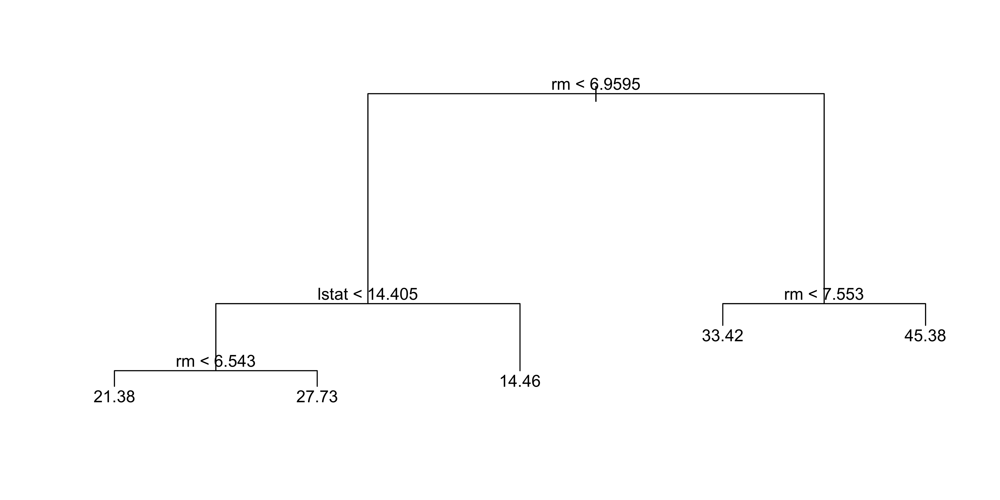
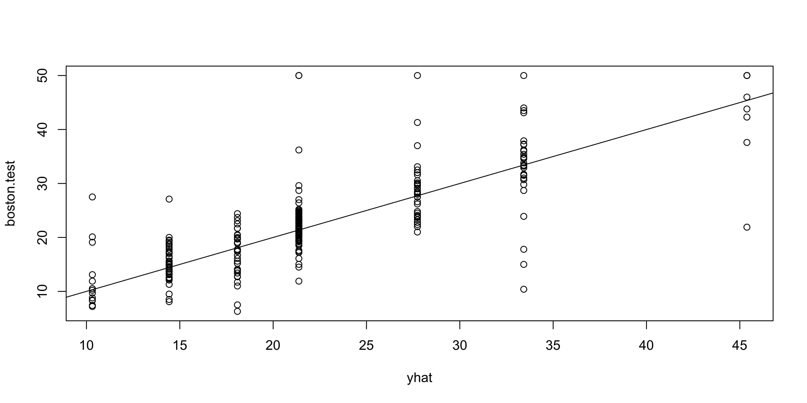

Lab 4
Decision Trees, Bagging, Random Forests, and Boosting
Fitting Classification Trees
- The
treelibrary in R is used to construct regression trees
- Fit a regression tree using the
Bostondataset
- Split data into a training set
- Train the tree model on the training data
library(MASS)
set.seed(1)
train <- sample(1:nrow(Boston), nrow(Boston) / 2)
tree.boston <- tree(medv ~ ., Boston, subset = train)
summary(tree.boston)
Regression tree:
tree(formula = medv ~ ., data = Boston, subset = train)
Variables actually used in tree construction:
[1] "rm" "lstat" "crim" "age"
Number of terminal nodes: 7
Residual mean deviance: 10.38 = 2555 / 246
Distribution of residuals:
Min. 1st Qu. Median Mean 3rd Qu. Max.
-10.1800 -1.7770 -0.1775 0.0000 1.9230 16.5800 summary()shows only 4 variables are used in the tree
- In regression trees, deviance = sum of squared errors (SSE)
lstat: % of lower socioeconomic status
rm: average number of roomsInterpretation:
- Higher
rm→ higher house prices
- Lower
lstat→ higher house prices
- Example:
rm ≥ 7.553→ predicted price ≈ $45,400
- Higher
Model flexibility:
- Larger tree can be grown using
tree.control(..., mindev = 0)
- Larger tree can be grown using
Next step:
- Use
cv.tree()to evaluate pruning via cross-validation
- Use

- Cross-validation selects the most complex tree in this case
- Tree can still be pruned manually if desired

- Based on cross-validation, the unpruned tree is selected
- Use the unpruned tree to make predictions on the test set
yhat <- predict(tree.boston, newdata = Boston[-train, ])
boston.test <- Boston[-train, "medv"]
plot(yhat, boston.test)
abline(0, 1)
[1] 35.28688- Test set MSE ≈ 35.29
- RMSE ≈ 5.941
- Predictions are on average within ~$5,941 of true median house values